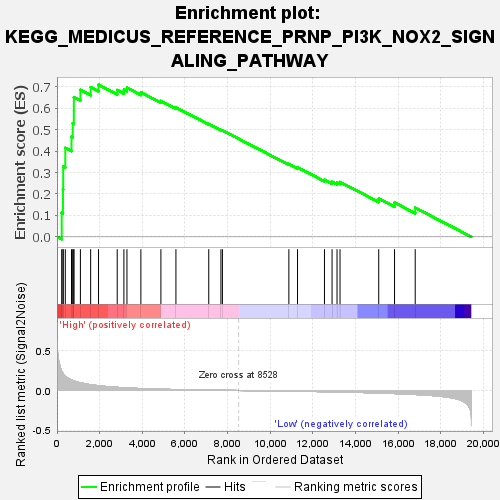
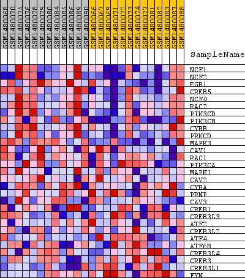
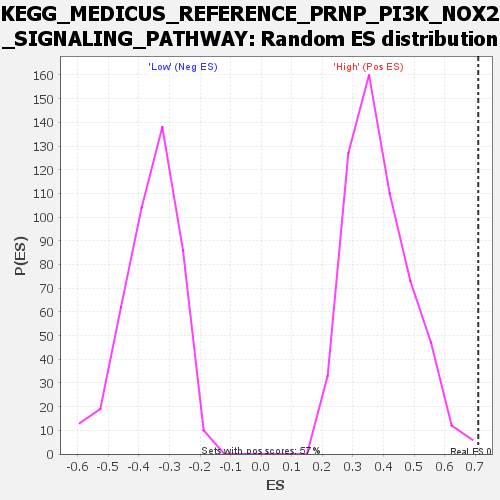

| Dataset | WG6v3.CYGB.cls#High_versus_Low.CYGB.cls#High_versus_Low_repos |
| Phenotype | CYGB.cls#High_versus_Low_repos |
| Upregulated in class | High |
| GeneSet | KEGG_MEDICUS_REFERENCE_PRNP_PI3K_NOX2_SIGNALING_PATHWAY |
| Enrichment Score (ES) | 0.70992815 |
| Normalized Enrichment Score (NES) | 1.83824 |
| Nominal p-value | 0.0017605633 |
| FDR q-value | 0.060527805 |
| FWER p-Value | 0.112 |

| SYMBOL | TITLE | RANK IN GENE LIST | RANK METRIC SCORE | RUNNING ES | CORE ENRICHMENT | |
|---|---|---|---|---|---|---|
| 1 | NCF1 | NCF1 | 220 | 0.242 | 0.1125 | Yes |
| 2 | NCF2 | NCF2 | 280 | 0.217 | 0.2203 | Yes |
| 3 | EGR1 | EGR1 | 291 | 0.212 | 0.3281 | Yes |
| 4 | CREB5 | CREB5 | 389 | 0.180 | 0.4149 | Yes |
| 5 | NCF4 | NCF4 | 680 | 0.133 | 0.4678 | Yes |
| 6 | RAC2 | RAC2 | 735 | 0.127 | 0.5300 | Yes |
| 7 | PIK3CD | PIK3CD | 789 | 0.122 | 0.5896 | Yes |
| 8 | PIK3CB | PIK3CB | 790 | 0.122 | 0.6517 | Yes |
| 9 | CYBB | CYBB | 1097 | 0.097 | 0.6857 | Yes |
| 10 | PRKCD | PRKCD | 1578 | 0.073 | 0.6982 | Yes |
| 11 | MAPK3 | MAPK3 | 1947 | 0.060 | 0.7099 | Yes |
| 12 | CAV1 | CAV1 | 2823 | 0.040 | 0.6851 | No |
| 13 | RAC1 | RAC1 | 3136 | 0.034 | 0.6865 | No |
| 14 | PIK3CA | PIK3CA | 3279 | 0.032 | 0.6955 | No |
| 15 | MAPK1 | MAPK1 | 3932 | 0.024 | 0.6743 | No |
| 16 | CAV2 | CAV2 | 4871 | 0.016 | 0.6342 | No |
| 17 | CYBA | CYBA | 5575 | 0.011 | 0.6038 | No |
| 18 | PRNP | PRNP | 7114 | 0.005 | 0.5270 | No |
| 19 | CAV3 | CAV3 | 7685 | 0.003 | 0.4990 | No |
| 20 | CREB1 | CREB1 | 7755 | 0.003 | 0.4967 | No |
| 21 | CREB3L3 | CREB3L3 | 10870 | -0.008 | 0.3402 | No |
| 22 | ATF2 | ATF2 | 11276 | -0.009 | 0.3241 | No |
| 23 | CREB3L2 | CREB3L2 | 12539 | -0.015 | 0.2665 | No |
| 24 | ATF4 | ATF4 | 12895 | -0.016 | 0.2566 | No |
| 25 | ATF6B | ATF6B | 13128 | -0.018 | 0.2536 | No |
| 26 | CREB3L4 | CREB3L4 | 13268 | -0.018 | 0.2558 | No |
| 27 | CREB3 | CREB3 | 15083 | -0.031 | 0.1784 | No |
| 28 | CREB3L1 | CREB3L1 | 15824 | -0.038 | 0.1598 | No |
| 29 | FYN | FYN | 16793 | -0.050 | 0.1356 | No |

